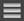

Musikverwaltung
Organisieren von Musik in Playlisten
Playlisten können entsprechend den Anforderungen Ihres DJ-Auftritts erstellt werden, um die Bibliothek zu organisieren.
1Wenn [Prepare] im Top-Menü angetippt wird, wird das Browser-Feld geöffnet.
2Tippen Sie auf die 【PLAYLIST】-Kategorie.
Eine Liste der Playlisten und Ordner wird angezeigt.
3Wenn  angetippt wird, wird das Eingabefeld für den Namen der Playlist geöffnet.
angetippt wird, wird das Eingabefeld für den Namen der Playlist geöffnet.
4Geben Sie den Namen der Playlist ein und tippen Sie [OK] an.
Die neu erstellte Playlist wird zur 【PLAYLIST】-Kategorie hinzugefügt.
5Tippen Sie auf die neu erstellte Playlist, um sie zu öffnen.
6Tippen Sie auf [Bearbeiten] und dann auf  .
.
Ein Feld zur Auswahl von hinzuzufügenden Tracks wird geöffnet.
7Tippen Sie auf die Tracks, die Sie zur Playlist hinzufügen möchten. (Mehrere Tracks können gewählt werden.)
8Tippen Sie auf [Fertig], um das Hinzufügen von Tracks zu beenden.
9Tippen Sie auf [Fertig], um das Bearbeiten von Tracks zu beenden.
Bearbeiten von vorhandenen Playlisten
1Tippen Sie auf die 【PLAYLIST】-Kategorie.
Eine Liste der Playlisten und Ordner wird angezeigt.
2Tippen Sie auf die zu bearbeiten gewünschte Playlist, um sie zu öffnen.
3Tippen Sie auf [Bearbeiten], führen Sie dann Hinzufügen bzw. Löschen von Tracks aus, und ändern Sie die Track-Reihenfolge.

Icon | Beschreibung |
Wenn angetippt, erscheint ein Feld zur Auswahl von zu Playlisten hinzuzufügenden Tracks. | |
 | Durch Bewegen kann die Reihenfolge der Tracks geändert werden. |
Wenn angetippt, wird [Entfernen] angezeigt. Tippen Sie auf [Entfernen], um Tracks zu löschen. |
4Tippen Sie auf [Fertig], um das Bearbeiten von Tracks zu beenden.
Organisieren von Playlisten
1Tippen Sie auf die 【PLAYLIST】-Kategorie.
Eine Liste der Playlisten und Ordner wird angezeigt.
2Wenn  angetippt wird, wird das Eingabefeld für den Namen des Ordners geöffnet.
angetippt wird, wird das Eingabefeld für den Namen des Ordners geöffnet.
3Geben Sie den Namen des Ordners ein und tippen Sie [OK] an.
Der erstellte Ordner wird zur 【PLAYLIST】-Kategorie hinzugefügt.
4Tippen Sie auf [Bearbeiten] und bewegen oder löschen Sie die Playlist oder den Ordner.

Icon | Beschreibung |
Verwenden Sie dies, um eine neue Playlist anzulegen. | |
Verwenden Sie dies, um einen neuen Ordner anzulegen. | |
Playlisten und Ordner können durch Bewegen verschoben werden. Zum Verschieben einer Playlist oder eines Ordners zu einer niedrigeren Ebene bewegen Sie diese(n) über den Ordner. Die darunterliegende Ebene wird angezeigt. Zum Verschieben einer Playlist oder eines Ordners in einen Ordner in einer höheren Ebene bewegen Sie diese(n) zur linken Kante des Bildschirms. Die darüberliegende Ebene wird angezeigt. | |
Wenn der Name der Playlist berührt gehalten wird, wird das Eingabefeld für den Namen der Playlist geöffnet. Wenn der Name der Playlist eingegeben wird und dann [OK] angetippt wird, wird der Name der Playlist bearbeitet. | |
Wenn der Name des Ordners berührt gehalten wird, wird das Eingabefeld für den Namen des Ordners geöffnet. Wenn der Name des Ordners eingegeben wird und dann [OK] angetippt wird, wird der Name des Ordners bearbeitet. | |
Wenn dies angetippt, wird [Löschen] angezeigt. Tippen Sie [Löschen] an, um die gewählte Playlist oder den Ordner zu löschen.
|